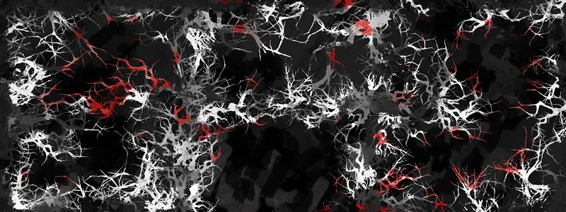
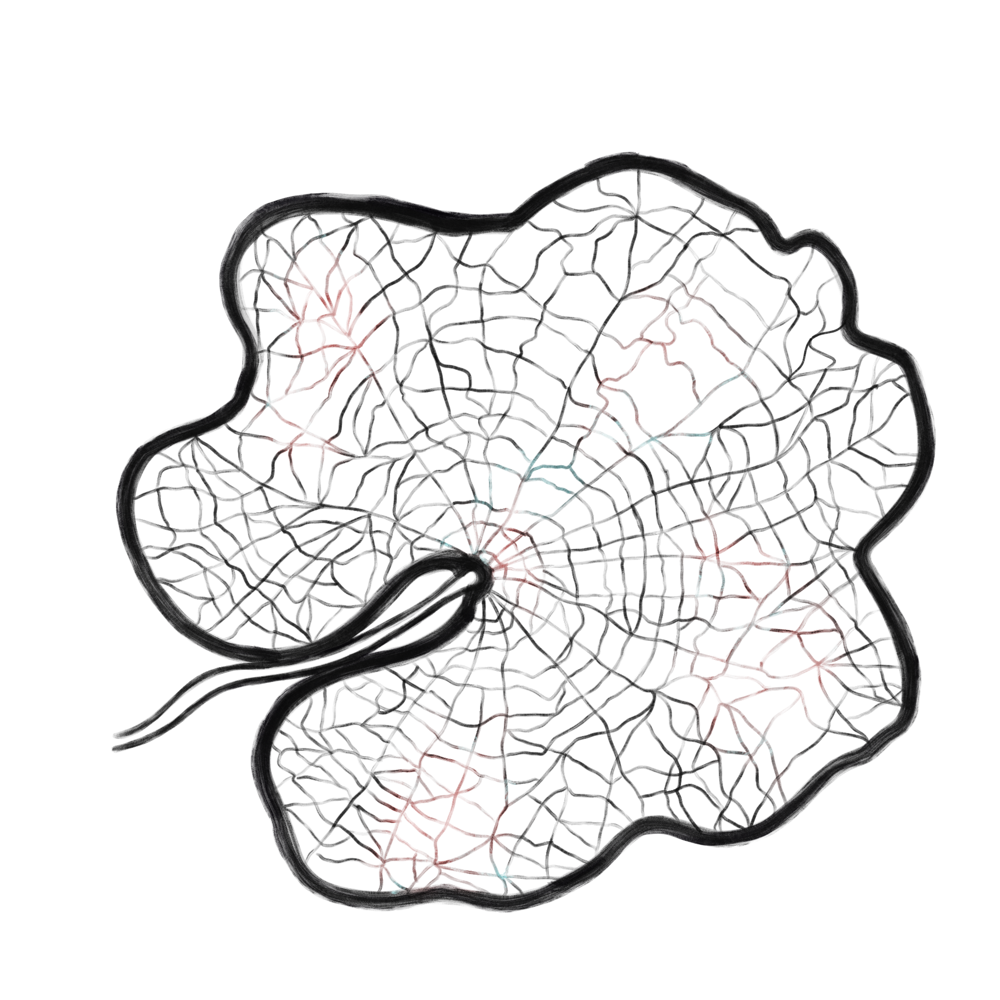

3 X
Montagnes au loin Où la chaleur du jour S’en est allée.
Les pétales de chrysanthème Se cambrent dans leur blancheur Sous la lune.
J’ai reçu un pétale tombé du cerisier. Ouvrant le poing je n’y trouve rien.
